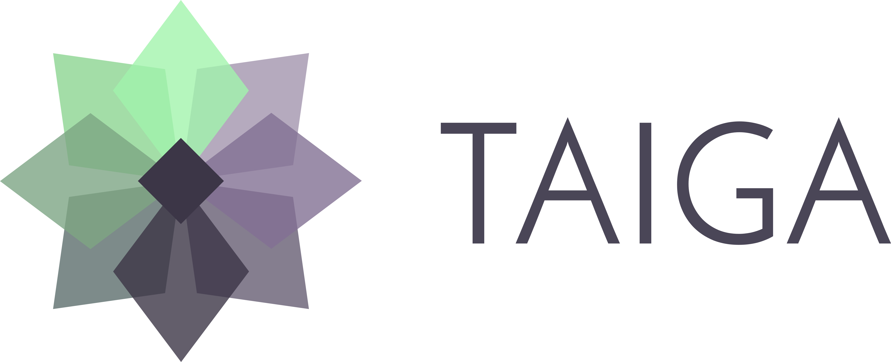
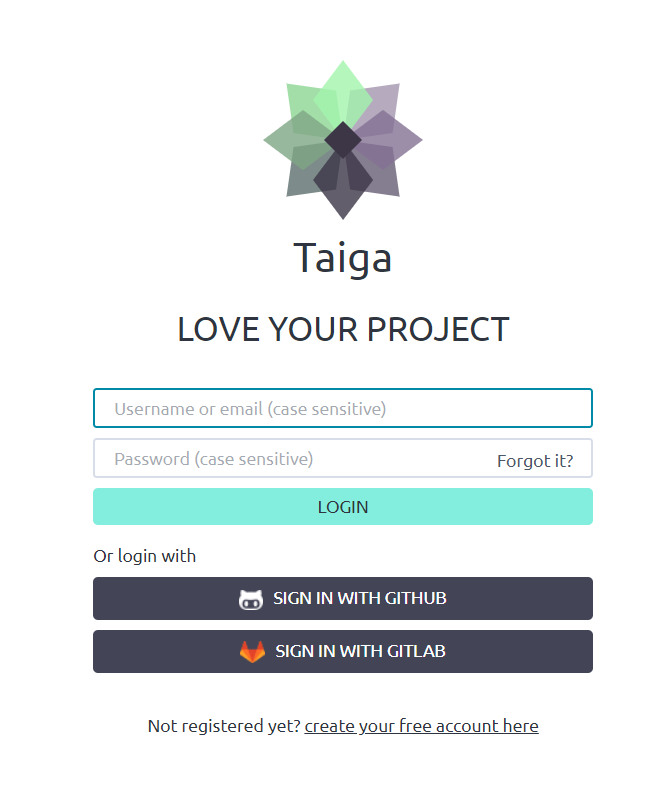
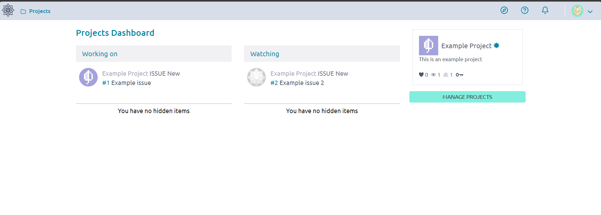

Your guide to Taiga.io

What is Taiga.io?
Taiga.io is our preferred project management tool. Taiga is fully open-source and has a generous & unlimited free tier. Taiga also offers the ability to self host a taiga instance on your own machines, we use taiga to manage the projects students are working on in Koodariverstas.
We recommend that you get to know the platform and its layout when you begin working in your first project.
Account management
Taiga has multiple ways of logging-in, we recommend using the same GitHub account you use in your projects in Koodariverstas. This makes it easy to attribute changes and credit directly to you when the names on both platforms are identical.
You can sign in with GitHub directly through the login prompt.

After logging in you can head to the account settings and change your profile picture, name, and password. You can also directly download your account information or fully delete your account from the account settings.
When entering names please use your real legal names so that we know who is who when attributing work and credits.
Projects
When you login you are thrown directly into the “projects” view. This view will show you the projects you have created or collaborate on. You can view and manage all your projects from this view.
The project view lets you quickly see the issues you are working on and the tasks you are following that are being assigned to others.

This page will help you understand the current to-do on a glance. You can follow others issues and coordinate your work with others and their timelines. If you don’t currently have any projects when logging in, this page will let guide you through creating a new project or joining a existing project.

When clicking on a project you will find a page that looks like this. Here you can see the team assigned to the project, action history, scrum and kanban, project wiki and current Issues.
Scrum
Scrum is a standard way to follow and plan development processes.
Taiga has a fully functional scrum management system that lets you follow tasks and check assigned workflows.
Here you can see which tasks are allocated to you or other members in your team. You can also track the progress of all tasks here.

Different tasks require different amounts of work and resources. Scrum let’s us assign the correct resources per task and track their progress in real time.
This also helps developers stay focused on their own work, and eases the workload of big projects by cutting it to bite sized bits.
TL;DR: Scrum makes it easy to follow smaller tasks and assign resources to said tasks. Enabling developers to focus on their own tasks.
Kanban
Kanban works in the same manner as scrum, the difference being that kanban focuses on the “bigger picture”. Where scrum concentrates on tasks as a part of a bigger picture, kanban focuses more on user stories. User stories are bigger sized entities that consist of the smaller scrum tasks.
You can think of it as a poster, where different parts of the whole poster consists of smaller parts of the poster to make a complete comprehensive poster.

This is the kanban view. Each user story consists of tasks that are managed in Scrum. When work is started on a task that is a part of a story, the story is updated to reflect the changes.

Here for example, I have “started working” on a task in user story 1. I have been assigned to the development to tasks for story 1. To reflect this change I have updated the kanban view to reflect the current state of the entire story.
TL;DR: Kanban enables the following of the bigger picture of the project. This helps in planning for bigger features and keeping track of the entire project.
Issues
Taiga has also a built in issues system. We use this to track known issues such as bugs, problems, requests or additional requirements. You can see all the current issues on the projects issues page.
The issues page shows you the Type, Severity and priority of the issue listed. You can also see the status, when the issue was posted and who it’s assigned to.

This is the issues page, you can search issues by subject or reference. Here you can also add new issues and see the overall state of issues in the current project.
When you click on an issue, it will open the detailed issue page.

This is the detailed issue page. Here you can see the description of the issue including the status, assigned personnel, possible attachments and comments made by other people in the project.
Usage of issues helps everyone keep track of the problems that may occur during development.
Filling information in Taiga
This section is can be used as a template to fill your own Taiga projects Wiki section. Information provided below will prove to be useful when filling in information about your own project in Taigas project Wiki.
Customer feedback form in Project
Version history. Only major edits listed here
| Version | Date | Creator | Content |
|---|---|---|---|
| 0.1 | dd.mm.yyyy | O. O. | First draft |
| 0.2 | dd.mm.yyyy | O. O. | All chapters. Sent for review. |
| 0.9 | dd.mm.yyyy | O. O. | Tweaks based on Company feedback, ready for approval |
| 1.0 | dd.mm.yyyy | O. O. | Company approved |
General
Purpose of the project and objective(s)
This project was initiated because Company X adopted the ISO 9001 quality management system. As part of this system, customer feedback is an essential tool for improving service quality and maintaining customer loyalty and so on…..
This project aims to create a customer feedback form that is easy to find and seamless to fill out. The form will include questions designed to meet CSAT (Customer Satisfaction) metrics, while also providing space for open feedback. Additionally, customers will have the option to provide their contact information, along with their preferred time and method for personal follow-up …and so on
Terminology
| Term | Explanation |
|---|---|
| CSAT | Customer satisfaction score. It is a commonly used metric that indicates how satisfied customers are with a company’s products or services. |
| It’s measured through customer feedback and expressed as a percentage (best 100% to worst 0%). |
Project scope
The project scope is:
- Design and development of the feedback form.
- Testing and validation to ensure all requirements.
- Implementation of the form on the company’s website or other relevant platforms.
- Written instructions how to use, manage and maintain the feedback form.
Out of the scope are:
- Developing any other customer service feedback tools (such as reporting for the form, CRM integration, chat boxes, etc.).
- Maintaining or redesigning Company’s web page
- This means that the Company is responsible to add the link to the web page or other relevant places
Schedule
Project start date - Project end date
Major milestones:
- Specification ready dd.mm.yyyy
- Implementation ready dd.mm.yyyy
- Rollout day dd.mm.yyyy
Resources
Personnel: Who does what?
N. N., Company X, Title
- Role in the project
- Is responsible for….
M. M., Company X, Title
- Role in the project
- Is responsible for….
O. O., Student
- Role in the project
- Is responsible for….
P. P., Student
- Role in the project
- Is responsible for….
Tools and services:
- For development
- Visual Studio Code (free)
- Microsoft SQL Server Management Studio (SSMS) (free)
- Communication
- Zoom, teams, emails
- Taiga.io
- Documentation
- Company’s Google drive
- Taiga.io
- Miro (for diagrams)
Risk Management
Top 3 (to 5) risks
- range is high - medium - low for impact and likelihood
| Risk | Impact | Likelihood | Mitigation plan |
|---|---|---|---|
| Delays on project schedule | High | Medium | Set more realistic schedule and deadlines. |
| Chosen technology is not suitable | High | Low | Change more suitable technology. Will most likely delay the schedule. |
| Chosen technology is too difficult | Medium | Low | More training and support from the Teachers |
Ways to reduce risks are:
- Risks will be monitored regularly
- Schedule is flexible by default
- Active communication between the project participants
Communication Plan
- Majority of the meetings and workshops are planned to the Work Plan in advance
- Reporting to Koodariverstas and Teachers regularly
- and all other relevant communication actions
Monitoring and Evaluation
- All follow-up checkpoints are integrated into the Work Plan.
- Koodariverstas will monitor the project in accordance with the Koodariverstas assignment process.
Achievement of objectives will be evaluated against the project’s Work Plan.
Work plan
This is a detailed work plan how the project will actually meet it’s objectives. Which tools, technologies, etc. It uses. How and by whom the testing is done and so on…
Used tools and technology
- Development tools
- Version control
- What database to use
Environments
Development environment is…
- Where is it and how to access it
Testing environment
- Where is it and how to access it
Schedule
Planning phase
mm.dd - mm.dd
Objectives:
- There will be at least 3 workshops
- Final documentation approved by mm.dd.yyyy
- User stories with tentative task list approved by mm.dd.yyyy
- Technology and tools are chosen
- Work plan is updated
Implementation phase
mm.dd - mm.dd
Objectives:
- Development / testing environments are available by dd.mm.yyyy
- Sprints are planned with detailed task lists
- Each sprint will have their own deadlines dates
- Work plan (this document) is approved dd.mm.yyyy
- This document will be updated and re-approved if necessary (if there arfe any major changes)
- Version which is ready for acceptance testing dd.mm.yyyy
Deployment phase
mm.dd - mm.dd
Objectives:
- Acceptance testing done by dd.mm.yyyy
- Installation dd.mm.yyyy
Workshops
| Number | Date | Participants | Subject(s) |
|---|---|---|---|
| 1 | mm.dd.yyy | List of necessary persons | General information, Basic requirements |
| 2 | mm.dd.yyy | List of necessary persons, | Graphical design requirements, Mandatory and optional fields |
| 3 |
Follow-up
Planning
- Workshop meetings are also follow-up meetings
- At the beginning of each workshop the previous tasks, questions, possible documentation is checked over.
Implementation
- Weekly meeting
- Progress and plans
- What was done
- What will be done
- Open questions
- Task list
- Issues list
- Any other relevant information
Development process
Description about the process
More detailed information about the sprints, how, when and by whom the sprints are created
Sprints
- Basic scenario: Functional feedback form with few fields
- Add the rest of the fields, email responses, etc.
- Add Brand layout, fine tuning
- Fixes and update (only if needed)
- Based on Company’s feedback after installation
- Is something was left out from the main sprints, it will be done in this sprint
Testing
- Unit testing done by the students as a part of the development process
- Each sprint is tested by the Customer and must be approved before the next sprint
- Acceptance testing
- How, who and in which environment?
- Issues list cannot have any unsolved critical issues
Any observation and defects are listed in the Issues (Taiga.io)
Deployment
Fill this information based on you project
Installation date and time: dd.mm.yyyy
Prerequisites
What is needed for the application to be installed
- Acceptance testing is successful
- The production environment is available and accessible
- Application server
- Database
- What ever is needed…?
- Who will test the connection, accounts, etc.
- Post notice about the installation a week before the installation day
- Who needs the information that the site is down?
- Who will be responsible posting?
- Content
- and so on
Installation schedule
- Put the web page in a maintenance state
- Who will do it
- 8.00 - 8.30 (give a time frame)
- Installation of the feedback form
- Who will do it
- 8.30-9.00
- Installation testing
- Who will do it?
- 9.00-9.30
- Open the web site
- Post notice that the site is up and running
Responsible persons
- ISP Host technical support: Name, phone
- Customer
- N. N.. phone
- N. M., phone
- Students
- Name, phone
- Any other essential contact person & phone
Communication
Normal communication is done by email
Emergency communication is done by phone
Each participant is invited to the Company’s Slack channel,
Slack channel is used on normal communication
Emergency communication is done by phone and posted to the Slack channel
Rollback plan
in case something goes wrong
Info: For smaller project this page may be enough, but if it is not, you can create new wiki pages, or link external document or add attachments in the Taiga Wiki.
Requirement Specification for Online Feedback Form
Requirements list
Business requirements
| ID | Title | Priority | State |
|---|---|---|---|
| BR 1 | Customers can give feed back easily | Mandatory | Approved |
| BR2 | Feedback back form will strengthen Company’s brand | Mandatory | Approved |
| BR 3 | Company can have simple access to analyze given data | Mandatory | Approved |
| BR 4 | The results must be measurable using CSAT/NPS/CES | Mandatory | Approved |
Functional requirements
| ID | Title | Priority | State |
|---|---|---|---|
| FR 1 | Submit the form anonymously, or optionally with contact information | Mandatory | Approved |
| FR 2 | The form must be responsive and work seamlessly on various devices | Mandatory | Approved |
| FR 3 | Multilingual (mandatory FIN, SWE, ENG languages) | Mandatory | Approved |
| FR 4 | Basic form fields are in use and can be mandatory (marked with *) or optional | Mandatory | Approved |
| FR 5 | Automatic email response | Mandatory | Approved |
| FR 6 | Integrate with our CRM | Optional | New |
Other requirements
| ID | Title | Priority | State |
|---|---|---|---|
| OR 1 | Must follow our ISO 9001 standard | Mandatory | Approved |
| OR 2 | Must be GDPR compliance | Mandatory | Approved |
| OR 3 | Must follow WCAG guidelines | Moderate | Approved |
| OR 4 | Must follow your Brand guidelines | Mandatory | Approved |
Requirements
More detailed information about each requirement /OR Extend the tables above
FR 1 Submit the form anonymously, or optionally with contact information
The customer must be able to fill the feedback form anonymously but if needed the customer can give their contact information: Name, phone and email-address, also preferably choice of contact method and time.
Links to other requirements:
- OR 1
- OR 2
Roles: the customer
User Personas
- Meet Customer Matti, who has opinions about the services they use
- Meet Customer service person Saara, who read sand responds to all customer feedbacks
- Meet Business analytics Kaisa, who wants to have metrics about the feedback, so the Company can improve improve business
- Meet Developer Myrsky, who is responsible for developing the feedback form
User stories
- User Story 1: As a Customer, I want to give feedback easily so that my opinions can help improve the service.
- User Story 2: As a Business analytics, I want to have a report of the feedbacks, so I can analyze the data effectively.
- User Story 3: As a developer, I want the form to be responsive so that it works on all devices.
- User Story 4: As a customer service person, I want to receive notifications of new feedback so that I can respond prompt
Note: As an example user stories 1 and 3 are expanded to the Backlog
Workshops
This is an example of a plan for a workshop. If you plan on having a workshop, you can use the information below as a template when filling in information of your workshop.
Date:
dd.mm.yyyy at 10.00 - 11.30
Participants:
N. N., Company X, title or role
M. M., Company X, title or role
O. O., Student, role in the project
P. P., Student, role in the project
Subjects:
- Company and Students introduction
- Checking that everybody has access the collaboration area & other relevant recourses/ services etc.
- (Open questions & task check here, after this first workshop)
- Purpose of the Customer feedback form
- Why the feedback form is needed
- User groups and their roles
- Metrics used for the feedback form
- How the data should be stored
- GDRP checklist, Company’s privacy policy, or any other rules, and regulations?
- Is there changes to next workshop (as a result of this workshop)?
Meeting notes
Note: the information from the above bullet list is written here
Open questions & tasks:
| Task | Responsible person | Due date |
|---|---|---|
| What is the Company’s privacy policy and GDPR | N. N. | Tomorrow |
| This is going to change the privacy statement, find out who is responsible to do so, and update public web page | M. M. | Before next workshop |
| Invite M. M. to taiga.io | O. O. | Tomorrow |
Next Workshop:
- xx.yy.yyyy
- Changes to be made
- Date, time, subjects, participant, etc.